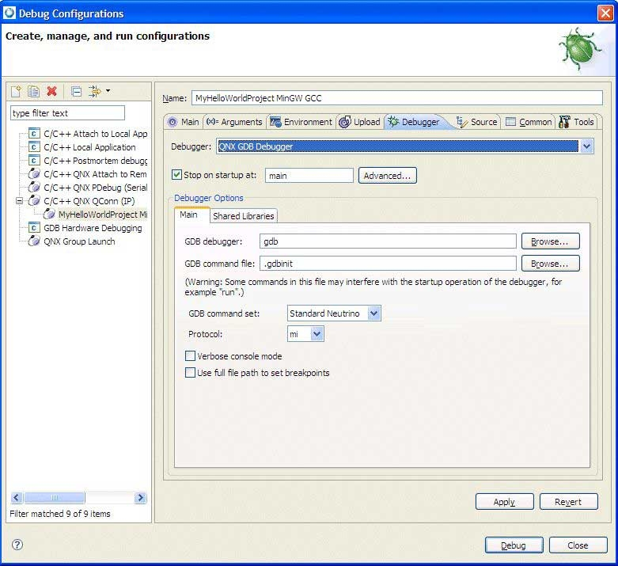

The Debugger tab lets you configure how your debugger works. To debug your application, you must use executables that are compiled for debugging. These executables contain additional debug information that let the debugger make direct associations between the source code and binaries generated from the source.
These options on the Debugger tab change, depending on the type of debugger you select:

The Debugger tab in the Launch Configurations dialog.
Generic debugger settings
- Debugger
- The debugger dropdown list includes the available debuggers for the selected launch-configuration type. The list also varies depending on whether you're debugging a remote or a local target.
- Stop on startup at
- By default, this option is selected and the default location is main(). If you deselect it, the program runs until you interrupt it manually, or until it encounters a breakpoint.
- Advanced
- Click to show the Advanced Options dialog:

Enable these options if you want the system to track every variable and register as you step through your program. Disable the Variables option to manually select individual variables to work with in the Inspecting variables in the debugger (see the Debugging Your Programs chapter). Disabling the Registers option works the same way for the Inspecting your registers.
Note: If you choose to track all the variables or registers, your program's performance may decrease. - Verbose console mode
- For GDB, select Verbose console mode to see all of the commands sent to GDB, and all of the responses returned from GDB.
- Use full path to set breakpoints
- Set breakpoints if you have many files with the same base name in the project. When file names are identical but their paths are different, setting this option ensures that breakpoints are set for the appropriate file, as expected.
Debugger Options
The Main tab and Shared libraries tabs let you specify specific options for the debugger that you selected.
- GDB command file
- Specify a file for running
gdb
using the -command option (see the Utilities Reference).
You can use the pane to select specific libraries or use the Auto button to have the IDE attempt to select your libraries.
- Verbose console mode
- See all of the commands sent to GDB, and all of the responses returned from GDB.
- Load shared library symbols automatically
- Watch line-by-line stepping of library functions in the C/C++ editor. You may want to deselect this option if your target doesn't have much memory; the library symbols consume RAM on the target.
- Use full path to set breakpoints
- Set breakpoints if you have many files with the same base name in the project.
- Stop on shared library events
- Choose this option if you want the debugger to break automatically when a shared library or DLL is loaded or unloaded.